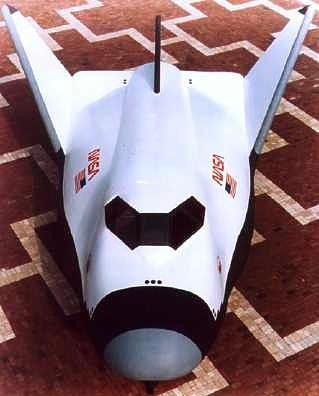

HL-20 Lifting Body and Controller
This demonstration shows NASA's HL-20 lifting body modeled in Simulink and Aerospace Blockset. This model simulates approach and landing flight phases using an auto-landing controller.
The HL-20 also known as personnel launch system (PLS) is a lifting body re-entry vehicle that was designed to complement the Space Shuttle orbiter. Designed to carry up to ten people and very little cargo[1], the HL-20 lifting body was to be placed in orbit either launched vertically via booster rockets or transported in the payload bay of the Space Shuttle orbiter. HL-20 lifting body was designed to have a powered deorbiting accomplished with an onboard propulsion system while its reentry was to be nose-first, horizontal and unpowered.
The HL-20 lifting body was developed as a low cost solution for getting to and from low Earth orbit. The proposed benefits of the HL-20 were reduced operating costs due to rapid turnaround between landing and launch, improved flight safety, and ability to land conventionally on runways. Potential scenarios for the HL-20 were orbital rescue of stranded astronauts, International Space Station crew exchange if the Space Shuttle orbiter was not available, observation missions, and satellite servicing missions.
[1] Jackson E. B., Cruz C. L., "Preliminary Subsonic Aerodynamic Model for Simulation Studies of the HL-20 Lifting Body," NASA TM4302 (August 1992)
